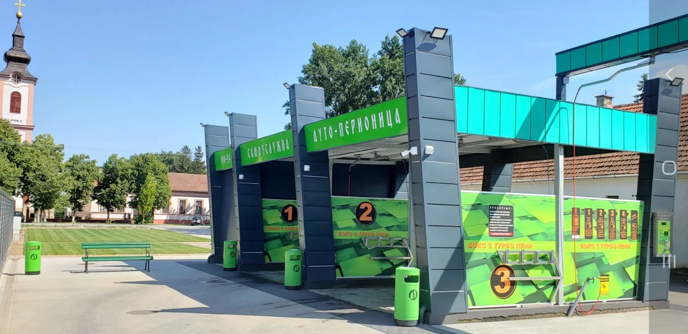
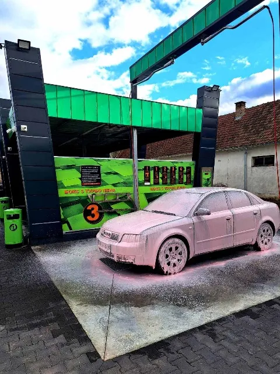

Open 24/7
365 days a year, whenever it suits you.

SELF-SERVICE CAR WASH · NOVO MILOŠEVO
Family-owned and operated in Novo Miloševo. Take charge of your self-service wash and choose your pace.
RIGHT NOW, OUTSIDE
Novo Miloševo, Serbia Checking current conditions…
GOOD TO KNOW
Open 24 hours a day, every day of the year. Each 100 RSD Žeton gives you 2 min 12 sec (132 sec) of washing.
365 days a year, whenever it suits you.
One Žeton gives you 2 min 12 sec (132 sec) of wash time.
Start when you're ready and control each step yourself.
A LOOK AROUND
A closer look at our self-service wash in Novo Miloševo.


PLAN YOUR VISIT
Looking for a self-service car wash in Central Banat, Vojvodina? Here are the essentials for visiting Feniks in Novo Miloševo.
Yes. Feniks is a family-owned and operated self-service car wash.
Feniks is at Maršala Tita 70, Novo Miloševo 23273, in the Central Banat District of Vojvodina, Serbia.
Open the location in Google Maps (Plus Code P77X+7X).Yes. Feniks is open 24 hours a day, 7 days a week, all year round.
One Žeton costs 100 RSD and gives you 2 minutes and 12 seconds (132 seconds) of washing time.
You wash your own vehicle and control the pace and steps of your wash.
FENIKS SELF-SERVICE CAR WASH
Maršala Tita 70